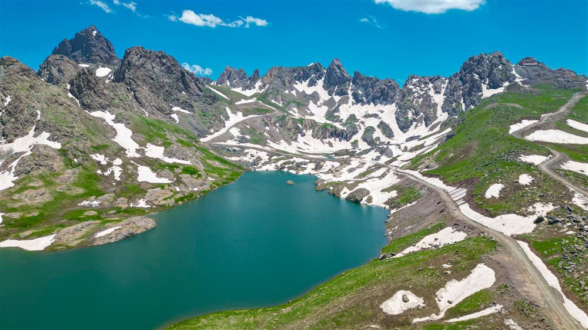
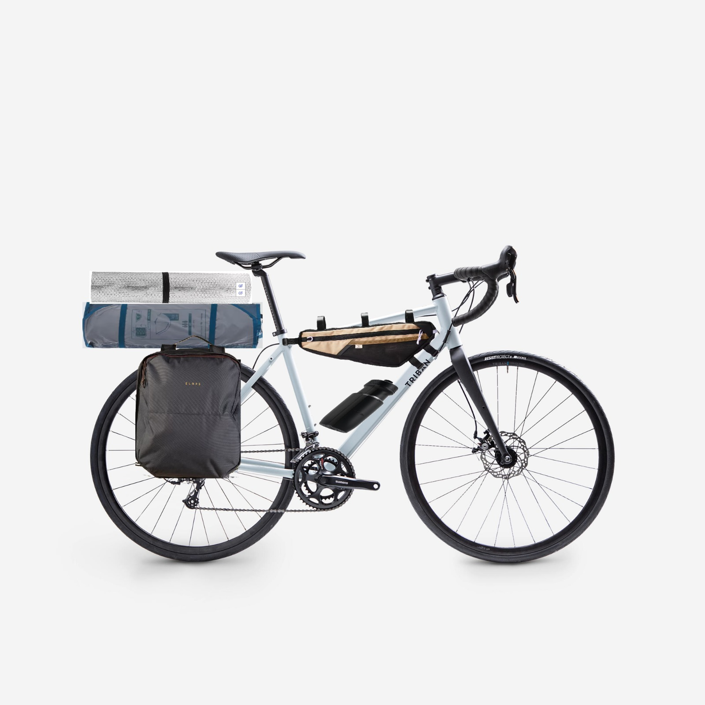
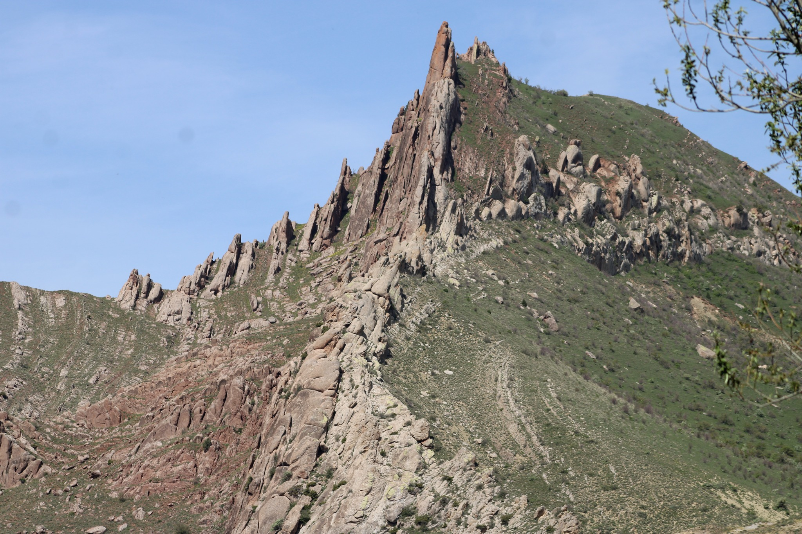

81 Zirve
Her dağ yapısı gereği kendisine özel plan gerektiriyor, özellikle bir ülkenin en her tarafından 81 adet dağ ise büyük bir plan gerektiriyor. Başlamadan önce en azından yaptığım ön-planları paylaşmak isterim.
Öncelikle bu yaptığım şey kimisine göre tehlikeli olduğu için saçma ve gereksiz olabilir. Hadi biraz daha tehlike ekleyelim :) Hem bu işi beraber yapabileceğim bir "buddy" olmadığı için hem de yalnız takılmayı sevdiğim için ilk planım tırmanabildiğim her zirveyi "solo" tırmanmak.
Evet biliyorum, çılgınca bir fikir ama etrafımdaki dağcılık kulüplerini araştırdığımda genel olarak üyeler çok yaşlı :) ve kulüpler kendi içerisine çok kapalı etkinliklerde bulunuyor. Açıkcası bu kadar "yaşlı" bir ortama sonradan dahil olmak çok istemiyorum.
Burada bu planı, yani solo yapma planını zorlayan 2 engel var. İlki aşabiliceğimi düşündüğüm, tırmanış izni.
Tırmanış İzni:
Bildiğim kadarıyla Türkiye'de 2 dağ askeri bölgede sayılıyor ve izinsiz tırmanış gerçekleştirilmiyor: Ağrı Dağı ve Cilo Dağı. Bu dağlar sınır komşuları veyahut eski terör tehlikeleri sebebiyle milli park statüsünde bile olsalarda genelde turizm acentaları ya da dağcılık lisansı olan kişiler tarafından tırmanılabiliyor. Yani ya bir turist ekibiyle bağlı olacağım ya da bir kulüp ile çalışıp lisansımı alıp öyle ilerlemem gerekecek.(Elbetteki ağır bir askeri kontrol yok daha çok izin kontrolü mevcut. Tırmanıcılara dönmüş bir silah namlusu mevcut değil yani 🤣)

Cilo ve Sat Milli Parkı, Fotoğraf Kaynağı: Hakkari Kültür ve Turizm Müdürlüğü
2. Sebep: Teknik Tırmanış
Her dağ patikalardan oluşan rotalardan oluşmuyor; kimisinde emniyet kemeri, ipler, karabinalar ve daha bir çok tırmanış ekipmanıyla dikey tırmanışlar yapmak gerekiyor. İşte burada dağcılık eğitimi azda olsa almak gerekiyor bence. Bunun içinde yine kulüplere başvurmak istemiyorum, onun yerine AFAD(Afet ve Acil Durum Yönetimi) üzerinden eğitim almayı düşünüyorum. Bu şekilde ülkemizde sık sık gerçekleşen doğal felaketlerde de nitelikli gönüllü olabilirim. Aksi takdirde bu yaptığım tırmanışların sonuçları farklı olabilir.
Şimdi gelelim ulaşıma. Aslında bu konu en karmaşıklarından çünkü yapmayı düşündüğüm yöntem çılgınca olabilir :) Öncelikle araç ehliyetim yok. Bu sebeple geriye tek seçenek kalıyor: Toplu ulaşım ama sanki bir sorun var, toplu ulaşım dağlar gibi ıssız yerlere her zaman gitmiyor ki?
Ben bir bisiklet aşığıyım, sanırım bu özelliğim inatla araç ehliyeti almamama sebep oluyor. Evet Türkiye hiç iyi bir bisiklet ülkesi değil, şehirlerimiz araç odaklı ve trafik kültürümüzde bisiklet genelde dışlanıyor. Evet kurallar var ama bu kadar faktörün yanında kurallar çaresiz kalıyor. Fakat yinede ben bisiklet sürmeyi seviyor ve ilerde bikepacking gibi şeylerde bulunmak istiyorum. İşte burda da planım şu: Uzakta olan dağlar için en yakın şehire otobüs ile gitmek(otobüsler genelde bisiklet taşıyabiliyor) ve dağın yamaçlarına kadarda bisiklet ile gitmek. Şayet o dağ bir milli park alanında ise bisikleti güvenli bırakabileceğim bir yer olacaktır, eğer değilse de dağın etrafı oldukça ıssızdır yani dağın aşşağısına bırakmak pekte sorun olmaz diye düşünüyorum :))
Aşağıda benim bisikletime göre Microsoft Paint ile tasarladığım bir bikepacking fotoğrafım var. Malzemeleri alınca gerçeğini göreceğiz 🤣

Geriye malzemeler kalıyor ama bunu pekte konuşmaya gerek yok galiba, ne zaman param olursa o zaman almaya çalışıyorum :)
Peki bu ön-plan sonrası nedir? İlk amacım bulunduğum şehir Sivas'ın en yüksek zirvesine(Kızıldağ 3025mt.) ilk tırmanışımı bu yaz ya da baharda başlayarak bu işe ilk adımımı atmak olucak. Bu süreçte de malzemelerimi aldıktan sonra Sivas'a yaklaşık 10km civar yakında olan Emirhan kayalarına giderek kendimi teknik tırmanışta geliştirmeye çalışmak.

Fotoğraf Kaynağı: Sivas Biliyor
Bir şeyi unutmayınız, ben bu planları daha öncede açıkladığım gibi dijital not defteri gibi paylaşıyorum fakat bunu okuyan kim varsa burdaki şeylerin bilinçli olarak yapılması gerektiğini, dağların tehlikeli olduğunu, sorumluluğun kişide olduğunu belirtmek isterim. Dağlar fethedilmesi gereken zirveler değildir. Orda olan ve bizi her daim bekleyen rotalardır, onlara göre davranın.
.webp)
Van Çığ Olaylarından kalan asker fotoğrafı. Fotoğraf Kaynağı: Milliyet Gazetesi
Saygılarımla görüşmek dileğiyle, Best for 81x81,
Ekrem Turan Fırat